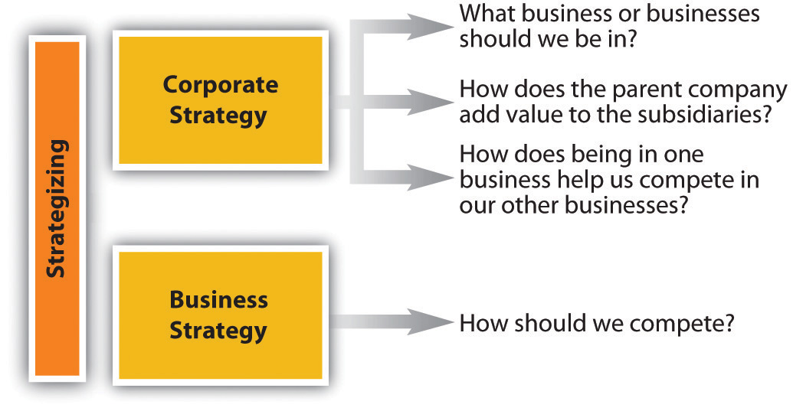
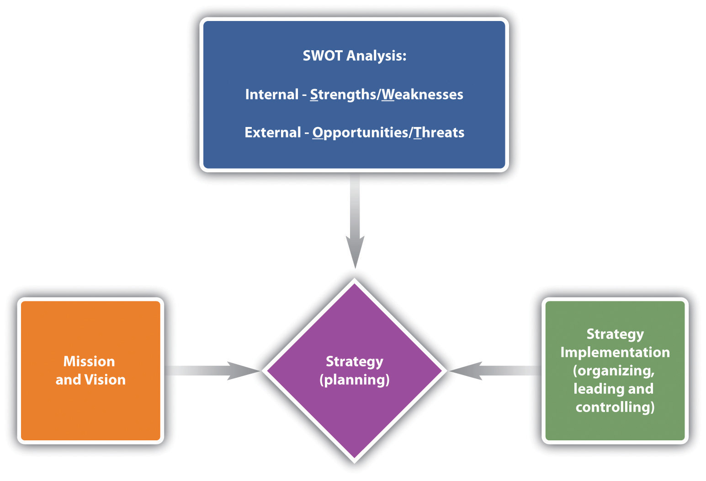

A strategy is the central, integrated, externally oriented concept of how a firm will achieve its objectives. Strategy formulationThe process of deciding what to do; also called strategizing. (or simply strategizing) is the process of deciding what to do; strategy implementationThe process of performing all the activities necessary to do what has been planned. is the process of performing all the activities necessary to do what has been planned. Neither can succeed without the other; the two processes are interdependent from the standpoint that implementation should provide information that is used to periodically modify the strategy. However, it’s important to distinguish between the two because, typically, different people are involved in each process. In general, the leaders of the organization formulate strategy, while everyone is responsible for strategy implementation.
Figure 10.1 Corporate and Business Strategy
Figure 10.1 "Corporate and Business Strategy" summarizes the distinction between business and corporate strategy. The general distinction is that business strategy addresses how we should compete, while corporate strategy is concerned with in which businesses we should compete. Specifically, business strategyThe ways a firm goes about achieving its objectives within a particular business. refers to the ways in which a firm plans to achieve its objectives within a particular business. In other words, one of Splash Corporation’s business strategies would address its objectives within the nutraceuticals business. This strategy may focus on such things as how it competes against multinationals, including Unilever and Procter & Gamble. Similarly, Walmart managers are engaged in business strategy when they decide how to compete with Sears for consumer dollars.
Corporate strategyAddresses three questions: (1) In what businesses should we compete? (2) How can the parent company add value to the subsidiaries? (3) How can diversifying our business or entering a new industry help us compete in our other industries? addresses issues related to three fundamental questions:
International strategyUsing corporate strategy to guide the choice of which markets, including different countries, that a firm competes in. is specialized in the sense that corporate strategy guides the choice of which markets, including different countries, a firm competes in. The different types of international strategy are reviewed in Section 10.3 "International Strategy". Even when a firm doesn’t sell products or services outside its home country, its international strategy can include importing, international outsourcing, or offshoring. ImportingThe sale of products or services in one country that are sourced in another country. involves the sale of products or services in one country that are sourced in another country. Penzeys Spices, for instance, sells herbs and spices that it buys from all over the world, yet it has retail outlets in only twenty-three states. However, such activity is not limited to small companies like Penzeys. Kohl’s Corporation, one of the largest discount retailers in the country, has stores exclusively in the United States but most of its products are sourced overseas. In outsourcingContracting with a third party to do some of a company’s work on its behalf., the company delegates an entire process (e.g., accounts payable) to the outsource vendor. The vendor takes control of the operation and runs the operation as it sees fit. The company pays the outsource vendor for the end result; how the vendor achieves those end results is up to the vendor. The outsourcer may do the work within the same country or may take it to another country (also known as offshoring). In offshoringTaking some business function out of the company’s country of orgin to be performed in another country, generally at a lower cost., the company takes a function out of its home country and places the function in another country, generally at a lower cost. International outsourcingOutsourcing to to a nondomestic third party. refers to work that is contracted to a nondomestic third party.
From where does strategy originate? Strategy formulation typically comes from the top managers or owners of an organization, while the responsibility for strategy implementation resides with all organizational members. This entire set of activities is called the strategizing process, as summarized in Figure 10.2.
As you can see with the opening case on Splash Corporation, the strategizing process starts with an organization’s mission and vision. A mission statementAn organization’s statement of purpose that describes who the company is and what it does is the organization’s statement of purpose and describes who the company is and what it does. Customers, employees, and investors are the stakeholders most often emphasized, but others like government or communities (i.e., in the form of social or environmental impact) can also be impacted.Mason Carpenter, Talya Bauer, and Berrin Erdogan, Principles of Management (Nyack, NY: Unnamed Publisher, 2009), accessed January 5, 2011, http://www.gone.2012books.lardbucket.org/printed-book/127834. Mission statements are often longer than vision statements. Sometimes mission statements include a summation of the firm’s values. Organizational valuesThe shared principles, standards, and goals that are included in the mission statement or as a separate statement. are those shared principles, standards, and goals.
Figure 10.2
Source: M. Carpenter, 2010
A vision statementA future-oriented declaration of an organization’s purpose and aspirations., in contrast, is a future-oriented declaration of the organization’s purpose. In many ways, the mission statement lays out the organization’s “purpose for being,” and the vision statement then says, “on the basis of that purpose, this is what we want to become.” The strategy should flow directly from the vision, since the strategy is intended to achieve the vision and satisfy the organization’s mission. Along with some form of internal and organizational analysis using SWOTA strategic management tool that helps an organization take stock of its internal characteristics (strengths and weaknesses) to formulate an action plan that builds on what it does well while overcoming or working around weaknesses and also assess external environmental conditions (opportunities and threats) that favor or threaten the organization’s strategy. (or the firm’s strengths, weaknesses, opportunities, and threats), a strategy is formulated into a strategic plan. This plan should allow for the achievement of the mission and vision. Taking SWOT analysis into consideration, the firm’s management then determines how the strategy will be implemented in regard to organization, leadership, and controls. Strategic planning, together with organizing, leading, and controlling, is sometimes referred to by the acronym P-O-L-CAcronym for planning, organizing, leading, and controlling; the framework used to understand and communicate the relationship between strategy formulation and strategy implementation.. This is the framework managers use to understand and communicate the relationship between strategy formulation and strategy implementation.
Research suggests that companies from different countries approach strategy from different perspectives of social responsibility. Central to the distinctiveness of the Indian business model is the sense of mission, a social goal for the business that goes beyond making money and helps employees see a purpose in their work. Every company we [the researchers] saw articulated a clear social mission for their business. ITC, a leading conglomerate, echoed the views of the companies we interviewed with this statement, describing the company’s purpose: “Envisioning a larger societal purpose has always been a hallmark of ITC. The company sees no conflict between the twin goals of shareholder value enhancement and societal value creation.” Contrast this Indian model, where a company’s business goal is seen as bettering society, with the US model, where we try to motivate employees around the corporate goal of making shareholders rich. The US approach is at a sizable disadvantage, because it is difficult for most people to see making money for shareholders as a goal that is personally meaningful. While it is possible to tie pay to shareholder value, it is extremely expensive to pay the average employee enough in share-based incentives to get him or her to focus on shareholder value.Peter Cappelli, Harbir Singh, Jitendra Singh, and Michael Useem, “The India Way: Lessons for the U.S.,” Academy of Management Perspectives 24, no. 2 (2010): 6–24.
SWOT analysis was developed by Ken Andrews in the early 1970s.Kenneth R. Andrews, The Concept of Corporate Strategy (Homewood, IL: Richard D. Irwin, 1971). It is the assessment of a company’s strengths and weaknesses—the S and W—which occur as part of organizational analysis; this organizational analysis of S and W is an audit of a company’s internal workings. Conversely, examining the opportunities and threats is a part of environmental analysis—the company must look outside the organization to determine the opportunities and threats, over which it has less control. When conducting a SWOT analysis, a firm asks four basic questions about itself and its environment:
A good starting point for strategizing is an assessment of what an organization does well and what it does less well.Mason Carpenter, Talya Bauer, and Berrin Erdogan, Principles of Management (Nyack, NY: Unnamed Publisher, 2009), accessed January 5, 2011, http://www.gone.2012books.lardbucket.org/printed-book/127834. The general idea is that good strategies take advantage of strengths and minimize the disadvantages posed by any weaknesses. Michael Jordan, for instance, is an excellent all-around athlete; he excels in baseball and golf, but his athletic skills show best in basketball. As with Jordan’s athleticism, when you can identify certain strengths that set an organization apart from actual and potential competitors, that strength is considered a source of competitive advantage. The hardest but most important thing for an organization to do is to develop its competitive advantage into a sustainable competitive advantageA situation where an organization’s strengths cannot be easily duplicated or imitated by other firms, nor made redundant or less valuable by changes in the external environment.—that is, using the organization’s strengths in way a that can’t be easily duplicated by other firms or made less valuable by changes in the external environment.
After considering what you just learned about competitive advantage and sustainable competitive advantage, it’s easy to see why the external environment is a critical input into strategy. Opportunities assess the external attractive factors that represent the reason for a business to exist and prosper. What opportunities exist in the market or the environment from which the organization can benefit? Threats include factors beyond your control that could place the strategy or even the business itself at risk. Threats are also external—managers typically have no control over them, but it can be beneficial to have contingency plans in place to address them.
In summary, SWOT analysis helps you identify strategic alternatives that address the following questions:
(AACSB: Reflective Thinking, Analytical Skills)